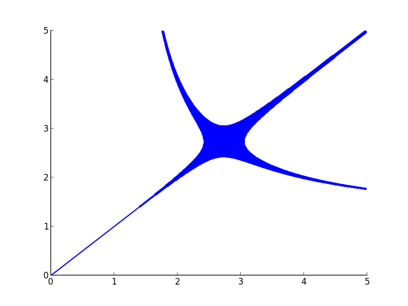
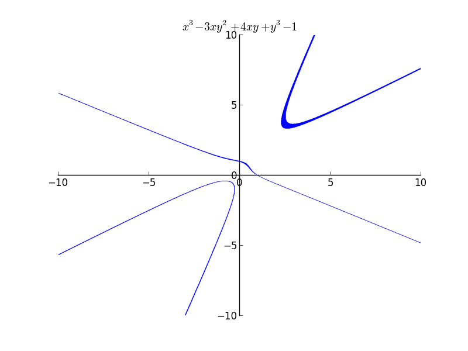

I have been trying to improve the implicit plotting module during this week. But I have hit a road block. I almost ran out of ideas to solve the problem.
Description:
The implicit plotting algorithm I implemented works something like below:
1) Get x and y interval. If it satisfies the expression throughout the interval, then plot it.
2) If it does not satisfy, throw away the intervals.
3) If it partially satisfies, then recursively subdivide into four intervals, and try again.
For cases of equality, the first point never holds true due to floating point errors. So we go on
eliminating regions, and after a certain depth, plot the remaining region. These are the regions where there is at least one solution. This is the reason why the plots are rasterized. But there is an inherent bigger problem here. In the cases of expressions like $x^{3}$ even if the x interval is small, the resulting interval after computation will be large. Sometimes, due to these large intervals, there might be lots of y and x intervals which satisfy because of these errors. Even if we make x interval really small, the corresponding y interval will be large, ie the line widths become large. The explanation is more of a guess rather than the right explanation.
Examples:
Plot of $x^{y}=y^{x}$

Even if I increase my depth of recursion to higher values, the thickness becomes less, but doesn't vanish. The plot actually should have been two separate curves.

The Mac OSX's Grapher uses a similar algorithm(A guess because they have similar rasterization) but takes care of the line widths.
If you feel you know where the problem is, please comment or email me. :)
There are comments.